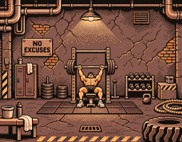
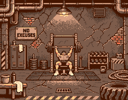
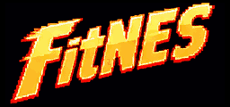
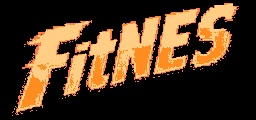

Closer to the original.
Across the whole scene.
A full-scene palette pass, with shared off-white towels and sneakers. Compare it directly with the original reference and the current hero, then see which extra colors earn their place.
The gym illustration
The original reference guides the entire revision: concrete, brick, pipes, equipment, lighting and the lifter. Both towels and the sneakers share the same off-white, with warm folds. Compare reference-driven colors with an alternative that retains crisp black outlines and brighter yellow hazards.
Original reference
Original colors · native comparison size


Current artwork
Nine colors

Full-scene revision

Loading the measured comparison…
| Hero | Oklab ↓ | SSIM ↑ |
|---|
Which added colors help most?
Start with the shared off-white. Each round then tests six promising extra inks inside the hardware constraints and keeps the best measured improvement. Small gains are shown honestly; more colors do not automatically make a better image.
| Added ink | Color-distance gain | Role |
|---|
The fiery wordmark
The new palette follows the original colors directly. A subtle 4×4 ordered pattern can blend neighboring warm shades without putting holes in the lettering.
Original reference

Current app treatment

Warm palette
Similarity measurements and hardware checks
Measured against the aligned original logo at native resolution. Lower Oklab distance means closer colors; higher SSIM means closer luminance structure. Fine dithering can improve the appearance of a gradient while reducing a pixel-level score.
| Logo | Oklab ↓ | SSIM ↑ |
|---|
Hero scores use the unmodified native-size original reference, including all its original colors. The reference-driven fit allows softer darks to approximate the original. The crisp alternative anchors dark outlines to black and keeps hazard highlights yellow. Both assign shared off-white highlights with warm shading to cloth and shoes. The same scoring reference is used for every version.
Each delivered candidate has an explicit MMC5 construction and an independent FCEUmm comparison. Hero revisions use at most 64 sprites, with no more than eight per scanline. Logo versions need no sprites. All use the same Composite Direct display model and whole-frame emphasis as the app artwork.
These are separately proven candidate assets. Combining their different shared palettes with app controls in a visible screen still needs a composition proof. This review does not replace the app's adopted artwork or expand its UI tokens.
Logo comparison report · Hero color search report · Conversion target